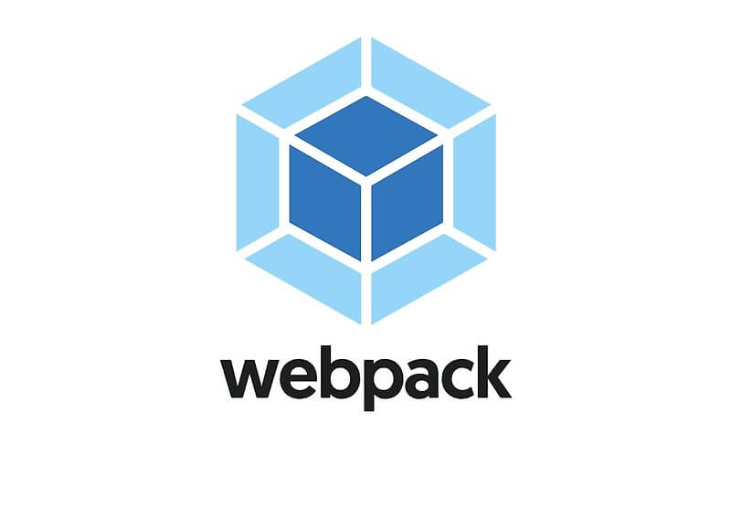
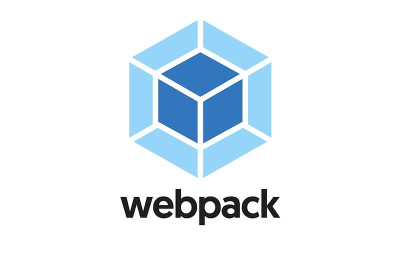
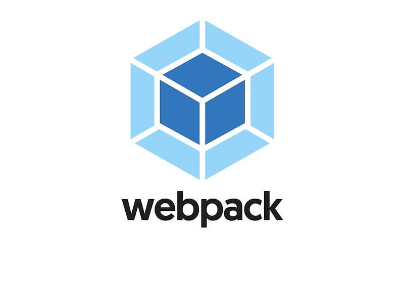

FRONTEND TECHNOLOGIEES

BACKEND TECHNOLOGIEES


 library React is a tool for building UI components")


 
 Node.js uses JavaScript on the server")
 is a widely-used open source general-purpose scripting language that is especially suited for web development and can be embedded into HTML.")